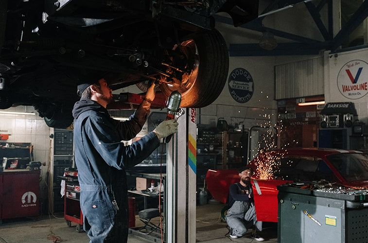
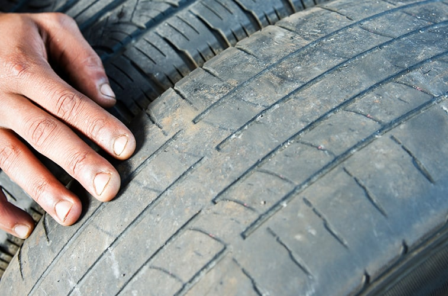
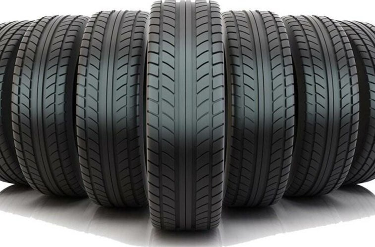
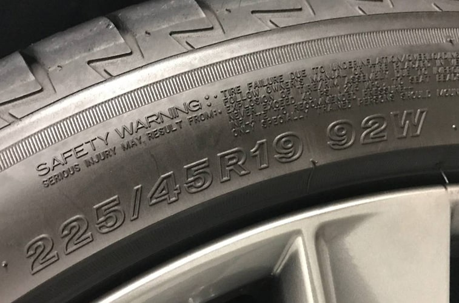
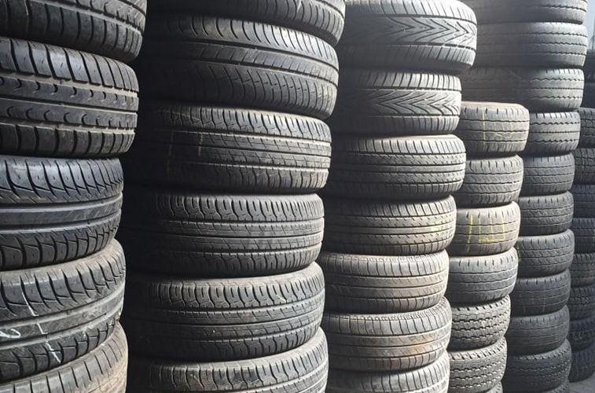
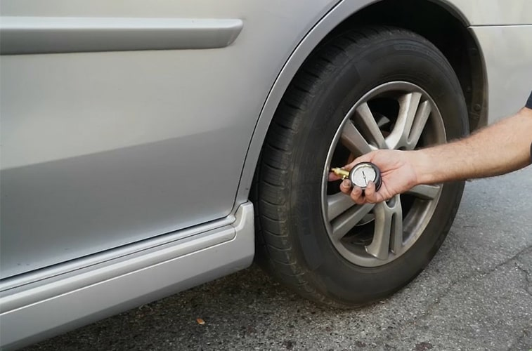
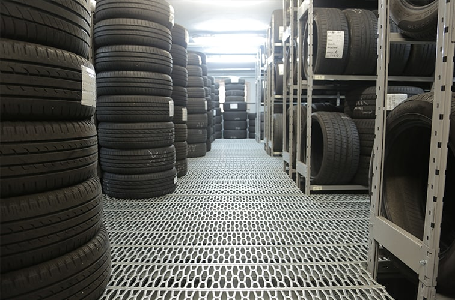
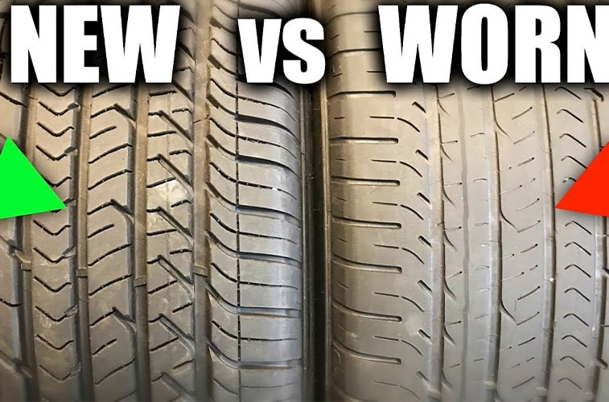

In the midst of the hustle and bustle of modern living, taking your car into a physical shop isn’t always..

Every part of your car is vital to the entire operation of your vehicle, but your tyres are one of...

Surely you already know that properly maintained tyres are vital to getting the most out of your vehicle. To help...

Before you begin shopping for new tyres for your car, you’d be glad to know that the information written on...

Buying used tyres can be an extreme sport. You have to be ready for the unexpected and every unhanded tactic...

Your car's tyres play many vital roles in the safety and function of your car - from helping you navigate...
Nobody wakes up, picks up their keys and hopes to have a bad day on the road. However, life happens...

Buying a new set of tyres is one of the most important decisions you can make for your vehicle. Yes,.

Buying new tyres in Nigeria can be a daunting experience for many reasons; it could be expensive and sometimes you...